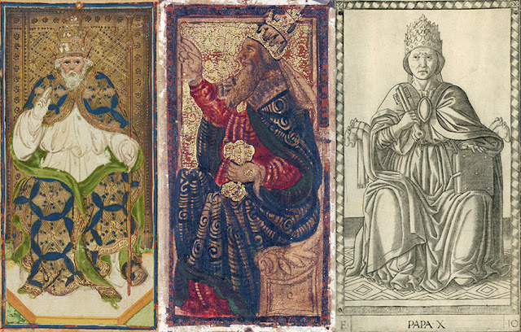
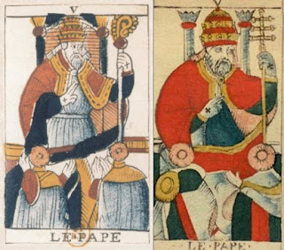
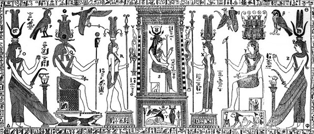
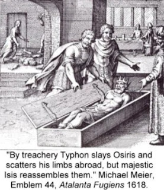
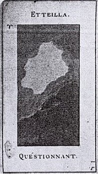
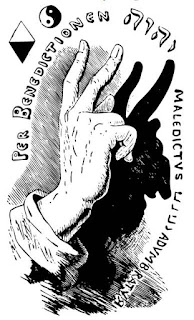
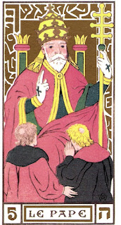
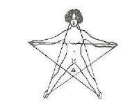
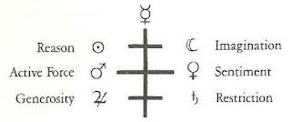
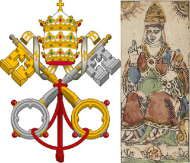

The Pope card in 15th century Italy

The Pope card, later called the Hierophant by the 19th century occultists, was in the traditional tarot, i.e. the deck used to play a trick-taking game, called the Pope. The earliest surviving version is that of the PMB (Pierpont Morgan-Bergamo, also known as the Visconti-Sforza and Colleoni-Bagliati), looking rather severe as he gives his characteristic blessing. In contrast, the d'Este Pope, of perhaps 1483 Ferrara (the wedding of Ercole d'Este) looks more kindly. I would guess that he is holding two keys in his other hand,although it is far from clear. Compare it with another Pope card (at right), in the so-called Tarot of Mantegna from around 1465-1470 in either Ferrara or Venice. (1)

Between the years of the PMB and the Este is the Pope of the so-called Charles VI deck. His face has been compared to that of Pope Eugenius IV, as painted c. 1447, the year of his death, by the visiting French painter Jean Fouquet. The painting is lost and only survives in engraved copies, such as that published in 1568 as part of a book on the popes by the Veronese scholar Onofrio Panvinio (http://expositions.bnf.fr/fouquet/grand/f216.htm). His headgear is conical like those of the other two, but without the three crown-like tiers usually seen in the 15th century. It is an older style, as seen for example in a c. 1300 fresco of Bonifacio XIII by Giotto in the Church of San Giovanni of the Laterano in Rome (https://www.britannica.com/biography/Boniface-VIII).
You will have noticed that the PMB and Este Popes are bearded, while the Mantegna and Charles VI are not. Popes were invariably clean-shaven in the 15th century. It is likely that both the clean-shaven ones are meant to resemble actual popes of their time or a little before, while the bearded ones are generic, with beards to emphasize their age and hence wisdom.
Uniquely in these depictions of the Pope, the PMB version has him holding a cross-staff similar to that on the Popess card in the same deck, with one horizontal bar near the top.
As the male head of the spiritual hierarchy, the Pope complements both the Popess, who is the female head, and the Emperor, who is his temporal counterpart. These were the two heads of trans-national hierarchies at that time. As befitting trump cards, they are more powerful than the Kings and other members of the four suits, but not more powerful than the powers above them in the tarot sequence, such as Love, the virtues, the passage of Time (the Old Man), and Death.
The Pope card in France
In France the various themes of Italian cards continue: at least one key, the three-tiered crown, the two lower figures, and the staff. But the lower figures are more ambiguously cardinals: they have the hats but not the robes. and the staff either has three horizontal bars or takes the form of a crozier, also known as a shepherd's cross. This last had also appeared in Italy, although sometimes on the Popess card (see https://tarotwheel.net/history/the%20individual%20trump%20cards/la%20papessa.html, a website from which I also take the composite below)).

In one version, anonymous of the early 17th century (center above), there is also a sphinx. It is of the Greek rather than the Egyptian variety, but it is doubtful that the distinction was well known, because at that time the Sphinx at Giza usually had only its head exposed. (the difference is that the Greek had the head and breasts of a woman, while the Egyptian had a man; also the Egyptian didn't have wings. However at that time the body of the Egyptian sphinx at Giza was covered with sand, exposing only the head. In 1781 Court de Gebelin seized upon the papal cross as evidence of the card's origin in ancient Egypt, Since there was also a Popess, he argued,the card could not be from Christian Europe, which knew no such figure. He also
compared the three-barred Pope's staff with a figure he saw on the "Table of Isis under the
letter TT." He means the Mensa Isaica or "Bembine tablet," which had turned up in the Renaissance and copied in many sources. He continues (J. Karlin, Rhapsodies of the Bizarre, p. 20).
It
has a connection to the triple Phallus which was promenaded in the
famous Festival of the Pamylia where one rejoiced to have rediscovered
Osiris, and where it was the Symbol of the regeneration of Plants and of
all of Nature. (1a)
Here de Gebelin is paraphrasing Plutarch's Isis and Osiris, a text well known in the 15th-18th centuries, just as the Bembine tablet was. Plutarch says ( http://thriceholy.net/Texts/Isis.html, sections XII and XXXVI)
And when they celebrate (as already stated) the feast of Pamylia,
which is a phallic one, they expose and carry about an image of which
the genital member is thrice the natural size; for the god is the
Final Cause, and every Final Cause multiplied by generation a
function, that which proceeds from itself: and for “often” we are
accustomed to say “thrice,” for example “thrice-happy,” and—
“Three times as many chains, without an end.”
Unless perhaps, this triplication of the member was understood by the
ancients in its strict sense; inasmuch as the moist Principle being the
Final Cause and origin of all things, has produced from the beginning
the three first elements, Earth, Air, Fire. For the tale that is tacked
on to the myth, how that Typhon threw away the genital member of Osiris
into the River, and that Isis could not find it, but deposited and
prepared a model of the same, ordaining that people should honor it and
carry the phallus about—all this permits us to infer that the generative
and seminal power of the god had first for materials moisture, and by means of moisture was mixed up with the things fitted by Nature to participate in birth.
So we have Orisis's phallus as a symbol of the generative power of nature.
However this is not about a triple phallus, but a phallus three times normal size
Otherwise, there
the Djed Pillar, like the Pope’s staff but usually with four
bars. It symbolized the backbone of Osiris, the stability of the realm,
and the tree that grew around Osiris's body after it had washed up on
the shore of Byblos, as Plutarch described it. (http://touregypt.net/featurestories/djedpillar.htm. Plutarch, Of Isis and Osiris XXXVI). Whether it has any connection with the papal cross dubious. It seems first to have been used by the Marionite Church in Lebanon. Since the city of Byblos was in what is today Lebanon, a connection is possible. But it is certainly not for that reason that a three-barred cross appears on the Pope card,
starting in late 17th or early 18th century France. It simply reflects the actual cross with which the papacy was then identified with, which appears for example in the 1490s illustration of Pope Joan. (left). So what is the Pope's connection to the Sphinx? I suspect just a nod to Egypt, at a time when people didn't know the characteristics of the Egyptian Sphinx.
It is a product of Egyptomania that raged in France from the late 16th century onwards. In the 15th and 16th centuries Egypt had been fashionable in Italy and points north. The Emperor Maximilian, who married the daughter of Lodovico "Il Moro" Sforza, had his genealogy traced back to Osiris. The reigning Pope at that time, Alexander VI, then did so as well, traced to a particular form of Osiris, namely, Serapis,
Osiris as the Apis Bull, identified as the source of the heraldic bull
of Alexander's family, the Borgias. This is Osiris as the chief deity of
a transnational cult, not the ruler of Egypt. (Hornung, The Secret Lore of Egypt: Its Impact on the West, p. 86.)
It is true that some 19th century
tarot theorists identified the tarot Pope with the astrological sign of
Taurus, i.e. the Bull. But this has to do with a certain way of associating the Hebrew letters with the tarot sequence and then constructing astrological correspondences mostly based on the Sefer Yetzirah. It has nothing to do with the Borgia Bull.

France added other details of interest starting with the two pillars behind the Pope, shown in
all the "Marseille" style cards. These pillars might also be in the
Popess card, but covered by a cloth. There is a certain resemblance to severely pruned palm trees at the top. Since Egypt divided into two
parts, Upper and Lower, with different symbols (cobra and vulture,
papyrus and lotus, Seth and Osiris), the two pillars could represent
these two united into one country and one religion (http://www.egyptologyonline.com/introduction.htm.).
There are other possible sources for the two pillars. The Freemasons' pillars of Hiram and Boaz, one of whom kills the other, might be an adaptation of the Upper
Egypt/Lower Egypt, Osiris/Seth motif .Also, in the Kabbalist Gates of Light, a condensed version of which was published in Latin in 1516, the two
sides of the "tree of life" are explicitly the two "pillars of Solomon", there called "Boaz" and "Yacin" (English translation, p. 125). However there is nothing about one killing the other. That, in the Masonic tradition, would seem to
derive either from the Osiris myth, in which Seth treacherously kills
Osiris, or the Biblical Cain and Abel.
The
1672 Chosson (repeated below left) adds a couple of other details not found in
Noblet (above left). The folds in the right-hand acolyte's robe can also be seen as an arm reaching across the back of the right-hand
acolyte: there is a fourth person, outside the picture frame, at whom the Pope seems to be looking. One Italian version reportedly of 1832 even shows such a person, now standing behind the acolyte.
Below the unseen person's hand on the Chosson, there is a curved line like a crescent moon; it ambiguously suggests a knife or sickle. By the 1761 Conver card
(below left), this suggestion is clearer: the line definitely ends in
the person's hand; if it is a fold in the fabric, it is a fold strongly suggestive of such a dagger. If you still
can't see it, look at the Camoin-Jodorowsky "restoration" (third from left above)
where they highlight the knife in dark blue.

The Bembine Tablet shows such a curved knife in the hands of two of
the priestesses. These knives would have been be interpreted as
sacrificial knives. In the context of an initiation they suggest what
will happen to the acolytes should they divulge the secrets they have
sworn to protect. Masonic and other secret societies actually did inform the initiate of such a penalty. (5)
Another
interpretation also occurs to me. Every ancient source about the Osiris
myth tells about his death and dismemberment at the hands of Seth (Plutarch Isis and Osiris XV, Diodorus, Library of History 21). In the tarot such dismemberment is suggested in the Death card,
with hands and feet sticking up out of the ground.There is an alchemical image of 1618 with this
same reference, at right.
In this
interpretation, the knife signifies the dismemberment experience that the initiates will undergo. Pico described it in his Oration: (http://cscs.umich.edu/~crshalizi/Mirandola).
...At one time we shall descend, dismembering with titanic force the
unity of the many, like the members of Osiris; at another time, we shall
ascend, recollecting those same members, by the power of Phoebus, into
their original unity....
By Phoebus, Pico means Apollo. So after the dismemberment of the Death card, there will be the ascent, a re-membering through rebirth by the power of the Sun, a metaphor for Christ.
The hierophant of the occultists
 The only trump of Etteilla's with a
religious figure is his 18th, which has a figure resembling the
Marseille Hermit, a monk holding a lantern. Its keywords are "Traitre"
and "Faux Devout": Traitor and False Devout. As a supporter of the French Revolution, which the Church opposed,it is no wonder that Etteilla had neither Imperial nor Papal cards in his tarot deck. At the beginning of his Troisieme Cahier, 1785, he said that what corresponds to the Pope in his system is his card number
1, which shows a white space in the middle of some clouds. It
represents the situation before the first day of creation, when God
said, "Let there be light" and a light shined in the darkness. Instead of the Pope, we see the moment of creation. (For the image I go to the reproduction in Decker, Dummet, and Depaulis's Wicked Pack of Cards.
The colored version of this card in later Etteilla decks, which puts a sun in the middle of the white space, derives from his disciple O'Doucet The sun of course is one of God's later creations.
Etteilla gave the cards the keywords "Etteilla" and "Questionnant." The
card stands for the querent, if the one who for whom the reading is
being done is male. If it comes up in the reading of a woman, it is
replaced by the eighth trump in his deck, showing a naked woman in a garden with the keyword "Questionante". The Querent is then symbolized both by the white space in the middleand the clouds around it: his mind is full of clouds which the cartomancer will soon dispell.
The keywords on the card do not exactly relate to the Pope card. So let us turn to
the lists of synonyums and alternative meanings for information about
what might have been an interpretation of the Pope card from which these
words might be drawn. Here they are:
ETTEILLA. God. All-Powerful, Eternal, Very-High, Unitrine, the Supreme
Being, the Central Spirit, the Spirit of God, the Male Consultant,
Chaos. Thought. Meditation, Contemplation, reflection, concentration.
Reversed: [Le Questionnant.] THE MALE QUERENT. The Universe. The physical man or the male. The querent. Philosophy. Philosophical. Philosophically. Philosopher. Sage. Sagacity. Sagely.
Here I have put O'doucet's list in italics, de La Sallette's in bold. They are quite different.. De la Salette's list
can be related easily to the Pope card. The Pope is the representative
of God, which is what we see in the Uprights. Etteilla, the designer of
the cards, or perhaps the deck itself before a reading, represents God.
The Querent is then the Chaos, filled with confusion, to which the
reading will bring light. The Reverseds I think reflect Etteilla's
particular slant, his revision of a tradition. He is trying to make the
card fit the ancient Egyptians, whom he believes were philosophically
inclined: hence the words reflect the philosopher rather than the
religious person.
After Etteilla and his followers came Eliphas Levi, first of the modern occultists. The card was now "the grand hierophant", indicating "demonstration, teaching, laws, symbolism, philosophy, religion" (Greer translation p. 395. The two columns behind him are those of "Hermes and Solomon": he is thus the pope of the hermetics, combining the philosophical, astrological and alchemical teachings attributed to Hermes Trismegistus with those of esoteric Judaism, i.e. the Kabbalah, and so reviving a sterile Christianity.

As fifth in the sequence, his symbol is the Pythagorean Pentad, a number he finds in the card by counting both heads of the acolytes as the bottom vertices of a square, the tops of the columns as the top vertices, and the Pope as the center point. He is thus "almost like a spider in the center of its web", an image he finds "suitable for things of truth, of glory, and of light" (p. 396). All the same, that is a rather ambiguous image, given that a spider's web is for trapping innocent creatures and filling them with poison. That a double meaning is not inappropriate can be seen from what he says of the pentagram in Chapter Five of the same Part 2 of
Doctrine and Ritual of High Magic, that "it is the sign of Mary or Lilith, it is victory or death, it is the light or the night" (p. 248). Properly made and consecrated, he says, it can summon up either a spirit of light or a spirit of darkness (p. 249). This is to remind us that the pentad is also the number of the 15th in the series, the Devil. It is a danger that must be guarded against by all the means at one's disposal, lest it become an instrument of "madness" (p. 248) and "fanaticism" (p. 249). Hence also Levi's famous image of the pope's sign of benediction and its shadow, the sign of malediction.
Levi's follower Paul Christian offered a similar reading overall but with a slightly different interpretation of the different elements on the card. The two column are the divine law on the right and the freedom to obey on the other (English translation p. 99). The two smaller figures, one red and the other black, represent "the spirits of Light and of Darkness, both of whom obey the Master of the Arcana," i.e. the Hierophant. He represents the spirit of good intentions and conscience; he invites us to "listen to the voice of the heavens in the silence of the passions and the instincts of the flesh." The triple cross represents "the spirit of God in the three worlds," i.e. the spiritual, intellectual, and physical.
Papus largely repeats Christian, but adds two points of interest. First, in contrast to the High Priestess, the Hierophant is active and gives secret instruction that is "oral and practical", as opposed to a book. The other idea is that the card is about "the reunion of opposing principles". He does not explain further, but it is probably the same as Christian's spirits of light and darkness, good and evil.
Wirth has a different interpretation of the two lower figures. The one on our left anxiously seeks a rational understanding of the Pope's words, while the other bows in simple acceptance. The words are for both.

Wirth also says that the Pope is the mediator between God and the Universe, symbolized by a five pointed star, the head representing the divine and the four other points the four elements and a person's four limbs.
As for the three-barred cross, Wirth sees its six sides, for three pairs of contrasting qualities, divided by a seventh vertically,each correlated with one of the seven planets.
In relation to the Kabbalah, the card embodies Gevurah, the spirit of judgment, fear of punishment, and severity in relation to divine law and conscience. Yet the figure also embodies, Wirth says, the generosity of forgiving grace.
As for Waite, he is against all esoteric interpretations. He says of the Hierophant, "He is the ruling power of external religion,"as opposed to the "esoteric, withdrawn power of the High Priestess. He is "the power of the keys, external orthodox doctrine," and "certainly not the prince of occult doctrine, as another commentator has suggested." He "symbolizes also all things that are righteous and sacred on the manifest side; he is the leader of salvation for the human race in general." In short, he is pretty much the pope as defined by Roman Catholicism; the only difference is that the one in Rome has no exclusive claim to that role.
Paul Foster Case, in contrast, calls the Hierophant our "inner teacher", whose voice we must learn to recognize in ourselves, separating it from "telephathic invasions from other personal entities, incarnate or discarnate, human or non-human" (Tarot Fundamentals, Lesson 14, p. 7). It
does not counsel what is merely expedient. It is always concise, clear, and
its meaning is unmistakeable. It never
flatters: more likely it will reprove.
It never misleads, and can stand the
severest spiritual, moral and intellectual
tests. As Lao-tze says: "Its counsel is always in season." When the instruction is received, Case says, it must always be obeyed. The two acolytes are then "desire" and "knowledge" (Ibid, p. 5), presumably he means one as the questioner to the inner teacher and the other as the receiver of the response. The two keys are gold for the sun and heaven, and silver for the moon and hell. The moon was worshiped by the followers of Hecate, he argues, goddess of the underworld (Ibid, p. 4). The two pillars, however, are masculine and feminine energies. And the three bars are earth (lowest), air (next), and water (highest), with fire as a knob on top of the cross.
Jungian Interpretations
Jung once said that the soul is by nature Christian (Psychology and Alchemy). This is said not in a dogmatic sense but in the way in which the symbols of Christianity can be interpreted psychologically. The breaking of the communion wafer thus corresponds to the dismemberment experience of which Pico speaks, as a prelude to psychological rebirth..The figure of the Pope then embodies that connection to the divine, in the sense of the totality of one's being, in other words the connection of ego with self.
Wirth's distinction between the two kinds of seekers corresponds to Jung's advice to two types of persons: he advises believers in existing institutional faiths to seek renewal there rather than with his school. His own method is for Wirth's anxious souls seeking understanding, which for both theorists occurs by a kind of inner dialogue between the ego and a more inclusive being within. At the same time Jung would not be opposed to interpreting the two as the desire for guidance and the instruction received. However for Jung such instruction is a dialogue between ego and self, conscious and unconscious, activating what he cakks the "transcendent function," which unites the opposites (see his essay by that name, in vol. 8 of his Collected Works, pp. 67-91, and his entry for that term in Psychological Types). This is different from Case's filtering out of "telepathic invasions," in that the nature of what is received is a product of inner dialogue (see also, 2004).
Wirth's interpretation of the horizontal bars in terms of six contrasting qualities is reminiscent of Jung's four functions, even if not precisely the same. The bottom two in Wirth's diagram are likewise not exactly introversion and extroversion, but restriction versus generosity has the same opposition of pulling in versus expanding outward. Then the vertical line of the staff would be what Jung called the "transcendent function" , which includes all pairs of opposites and therefore transcends them.
The three bars are also reminiscent of the various levels of awareness: we could perhaps say "ego" for one, "personal unconscious" for the next, and "collective unconscious for the third. Or perhaps they are different levels of the unconscious, personal, cultural, and collective.
Jung's concept of the shadow is of course suggested by Levi's drawing of the Pope's hand of benediction (blessing) vs. the Devil's head expressing malediction (damnation). The shadow side of papal authority, when spiritual authority succumbs to self-gratification by any of the "seven deadly sins", becomes the "prince of this world", i.e. the Devil who tempted Christ in the wilderness.
Sallie Nichols (Jung and Tarot, p. 125) says that the card represents Emma Jung's fourth stage of animus development in the unconscious of a woman. But as logos, another term Nichols uses, it would seem to apply equally well to either gender. First is "directed power", which Nichols finds in the tarot Magician, then "the deed", which she finds in the Knights, then "the word", personified by the Emperor, and finally "meaning", portrayed as the the Pope. There are men of physical power, men of deeds, i.e. action, men of words, and men of wisdom. Meaning, Nichols says, is no longer satisfied by the dogma of the Church and its figurehead the Pope, but something "we must somehow discover within ourselves" (p. 126). This of course is only one aspect of the Jungian perspective.
Another archetype, it seems to me, is that of initiation (see e.g. Henderson,
Thresholds of Initiation). This is suggested not only by the apparent dagger behind one of the small figures, but by the presence of the two acolytes in general. Two smaller figures exist on some early versions of the Empress and Emperor, too: female on the one, male on the other (at right the so-called "Alessandro Sforza" Empress and the Charles VI Emperor). The upper figures may be presiding over the scene, but in non are the lower figures actively attending to the upper figure's words.
Secret societies of the 17th and 18th centuries of course reveled in initiations, by which members ascended through the hierarchy by "degrees". In musical drama there is the famous example of Mozart's Magic Flute, in which the two candidates for initiation are first the hero, Tamino, and his more earthy companion Papageno, and then, after Papageno is booted out, the heroine Pamina.

The two figures on the Pope card are similarly entering an initiation. On the one hand the colors of the two keys, in the Bolognese version, as in the official Emblem of the Papacy, are gold and silver; these suggest the sun and moon and so masculine and feminine (rather than heaven and hell). When combined, as they are in the Emblem and on the Bolognese card, the result is also something that embraces and so transcends the opposites, not just masculine/ feminine but also, in the tarot sequence, wise/foolish, noble/ignoble, upward/downward, etc. Even as the two represent the opposites, they are also united with each other and by the figure above them. This is a pattern that will be repeated in cards to come: the two women on the Love card, the two horses of the Chariot, the two pans of the scales, the upward and downward figures on the Wheel, the disembodied heads on the Death cards, the two jugs of Temperance, and so on, twosomes that are sometimes opposites and sometimes not.
 I cannot find a letter "TT,"nor anything resembling a staff with horizontal bars, in the Bembine Tablet (https://upload.wikimedia.org/wikipedia/commons/7/73/Bembine_Table_of_Isis.png) . The only thing remotely similar is a piece of hieroglyphic writing at the foot of Horus with horizontal bars, but even then without being on a staff.
I cannot find a letter "TT,"nor anything resembling a staff with horizontal bars, in the Bembine Tablet (https://upload.wikimedia.org/wikipedia/commons/7/73/Bembine_Table_of_Isis.png) . The only thing remotely similar is a piece of hieroglyphic writing at the foot of Horus with horizontal bars, but even then without being on a staff.{kind=link}